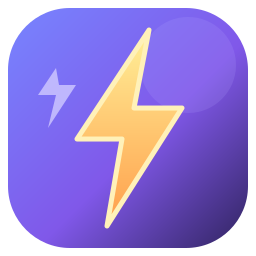
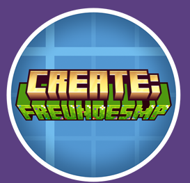

🎮
Minecraft wirklich starten
Melde dich mit Microsoft an. Der Launcher lädt Spiel-Dateien und Java nach und richtet Vanilla, Fabric, Forge, NeoForge oder Quilt ein.

Ein Launcher für deine Minecraft-Profile, Mods und Skins. Wähle deine Version, stell dir deinen Mod-Ordner zusammen und starte mit deinem Microsoft-Konto.
Windows 10/11 · 64-Bit · Microsoft-Konto mit Minecraft: Java Edition erforderlich
Deine Profile und Mods bleiben sauber voneinander getrennt.

Blitzspritz verbindet deinen Minecraft-Start mit übersichtlichen Profilen, echten Mod-Downloads und deinem Skin-Menü.
Melde dich mit Microsoft an. Der Launcher lädt Spiel-Dateien und Java nach und richtet Vanilla, Fabric, Forge, NeoForge oder Quilt ein.
Suche auf Modrinth nach passenden Mods und füge sie direkt in den gewählten Versions- und Loader-Ordner ein. CurseForge-Dateien und Modpack-ZIPs lassen sich importieren.
Bearbeite einen Skin im Pixel-Editor, lade ihn zu deinem Konto hoch und wähle verfügbare Minecraft-Capes aus.
Lege mehrere Profile an. Versionen, Loader und heruntergeladene Mods bleiben in getrennten Ordnern.
Wähle ein fertiges Thema oder lade dein eigenes Hintergrundbild hoch.
Blau und Violett als Basis, mit warmen gelben und orangen Akzenten.
Das Profil ist mit Minecraft 1.20.1 und Forge vorbereitet. Öffne die CurseForge-Datei, lade die Modpack-ZIP herunter und importiere sie im Launcher-Tab „Mod-Bibliothek“.
Lade den Windows-Installer herunter und starte die Einrichtung.
⬇ Blitzspritz-Setup herunterladenWindows 10/11 · 64-Bit
Blitzspritz ist ein unabhängiger Drittanbieter-Launcher und steht in keiner Verbindung zu Mojang Studios oder Microsoft. Minecraft ist eine Marke von Mojang Studios. Für automatische CurseForge-Modpack-Downloads kann ein persönlicher API-Schlüssel nötig sein; einzelne .jar-Dateien lassen sich auch manuell importieren.